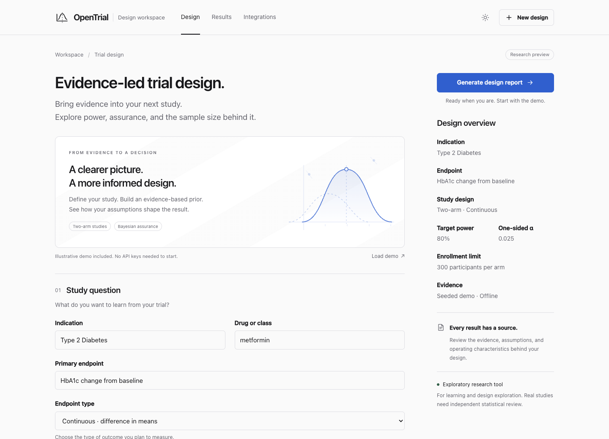

Project 01 · 2026Bayesian trial design
OpenTrial
A Bayesian trial-design report engine that turns traceable evidence into priors, operating characteristics, sensitivity analyses, and reproducible design reports. It is deliberately built so a statistician can inspect the assumptions rather than trust a black box.
Continuous + binarytwo-arm endpoints
Provenance firstsource-linked prior inputs
Simulationempirical Type I calibration
SequentialO'Brien-Fleming + Pocock
Python · vanilla JavaScript · Bayesian inference · simulation · evidence APIs

Real project UI · screenshot copied into portfolio assets